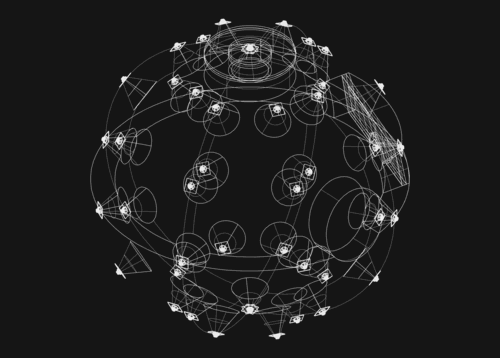
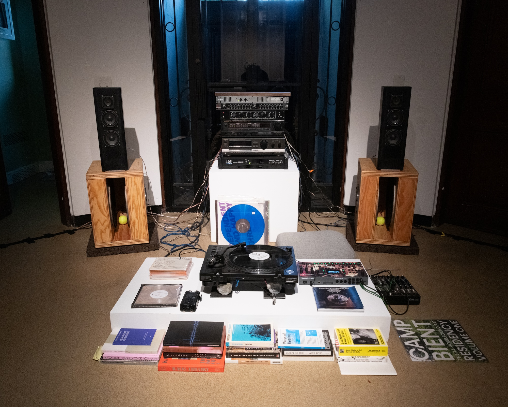
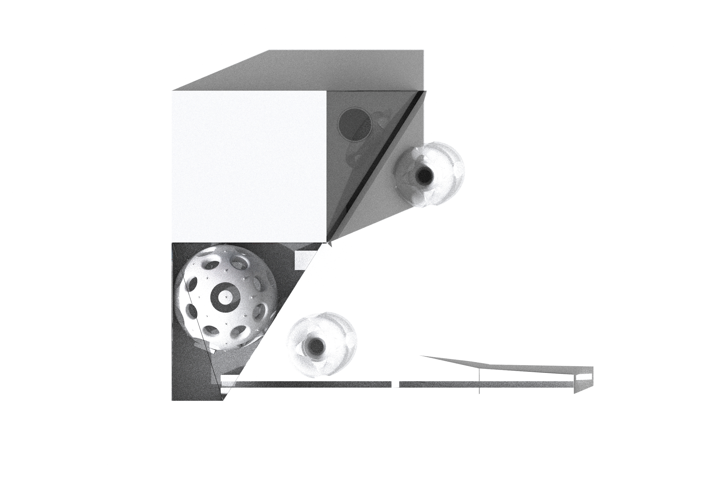
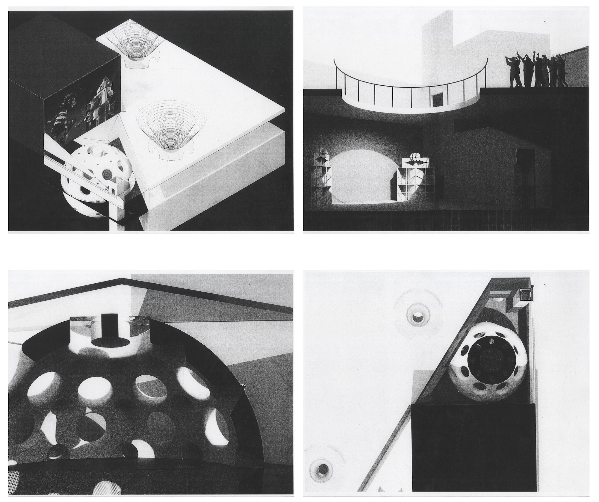
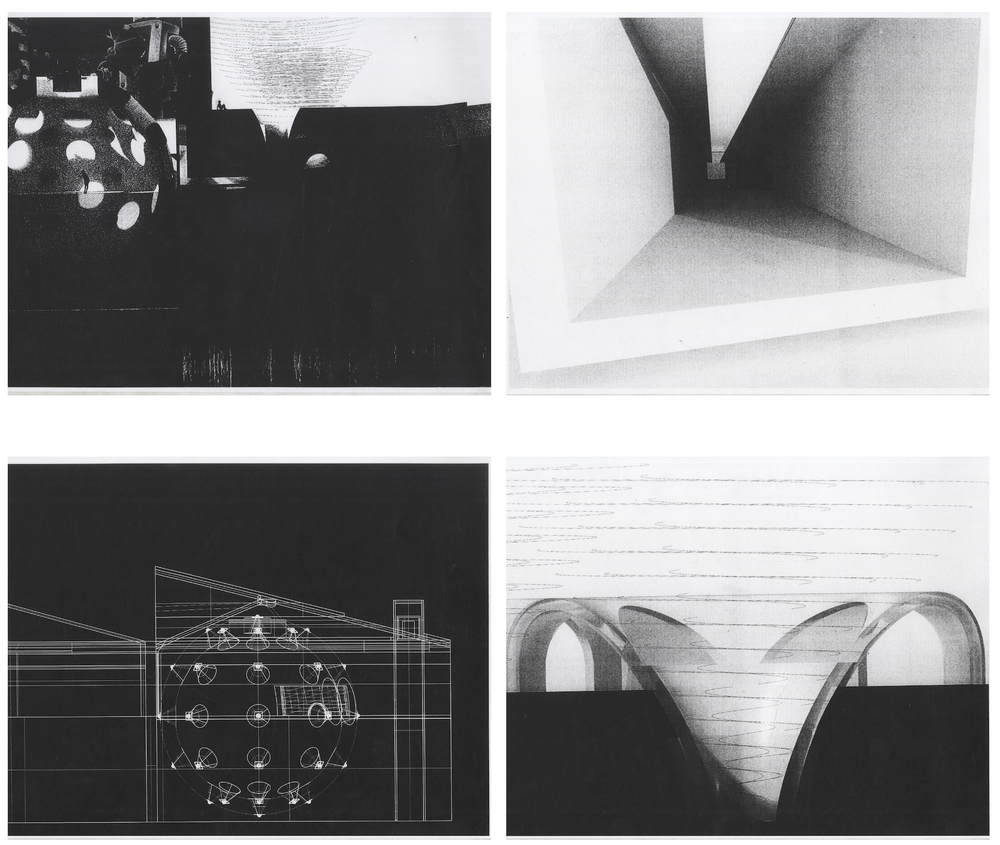

RISD BArch Thesis May 2026
Thanks to the Ground Beneath my Feet

Thanks to the ground beneath my feet explores sound as a new media lens for the design of architecture, using speaker design and acoustic intervention as a means for creating immersive ritual spaces. Drawing from sound system culture, Indigenous sonic practices, sound art and afrofuturism it engages with resonance and amplification as tools for ritual space-making while recognizing the ground as a carrier of layered Black and Indigenous histories. Sonic apertures and openings into the earth become methods for activating these histories as living material for design. Operating between excavation and landscape, the work positions architecture as an instrument tuned to the ground, asking how sound can reconnect people to place, history, and futures embedded in the earth.

The Black Archive for Loud Sonic Acts AKA BALSA is a speculative research facility designed with accessibility, performance and mediation in mind. The site is across from the Javits Center in. NYC, sitting inside of sunken ground next to a maintenance rail yard and a broadcasting center. The broadcasting center is the poetic beacon for black sound as the research from these facilities are to be broadcast widely, as like the sound from a speaker horn. I am attracted to the sunken ground as a ritual way of connecting to ancestors and the history that the ground holds. To be rooted in the ground is to broadcast your existence in the context of the ancestors of black histories, traditions and rituals. The body acts as the grounding rod, when struck by lightning, dissipating energy into the ground as to to provide the ground with the nutrients of black energy and all that is alchemized within it through the rituals that take in these spaces. BALSA consists of a Spatial Audio/ Ambisonics Sphere array with 42 speakers and 4 subwoofers in one room, and a discotheque with 4 speaker stacks in the other room. Both spaces are accessible via an elongated pathway from the street, with a well of light along the top. In-between pathways is the ritual tea room with an aperture well of light and sound in the form of an acoustic waveguide to encourage the interaction and deep listening of the sound of our environment and all that it encompasses. This space is meant to reorient our senses and how we experience the technology and infrastructure of our surroundings, and transform it into something meditative. Sound is used as the medium for translation and reorientation of these conversations of technological politics in our rapidly advancing society. Not only is this space the median between the outside and these research/ ritual spaces but it is the median for the political conversations surrounding sound spaces and how they are designed. It’s important that we hear the acoustic horn as the Acousmonium before the amplified horn. It is important that we ground ourselves before sound lifts us off of the ground. The spatial audio studio research facility provides people with the medium of panned sound. We all experience sound around us but music is stereo, movies are 5.1, Apple is panning Sabrina Carpenter around your head like a “4D Sound Experience” YouTube video from the early 2000s and trying to convince you its Spatial Audio. Nothing sounds like the live preference from the band, and even then most electronic musicians or single instruments are coming at you stereo or mono. Spatial Audio allows us to have new conversations and breaks the boundaries of how we design sound for space and space for sound. These facilities are often tied to academia and institutions which kills countercultural movements and binds the spaces to the people that have the privilege of using them. This space is to be shared, for everyone to experience sound, especially BIPOC and Trans individuals. This reorientation and panning and movement of sound is to reorient, pan and move BIPOC studies into the future and into the dream world on this non-linear timeline. It’s the forward movement, embedded in the earth and in the ground as the ritual. The sound room is the collective music listening, as music is the healer. Many artists, children and elders will share their stories through these interactions and make essential connections and this space to facilitate these connections deep within the surround. Architects agree-there is no equal. We must project our voices through all means nessacary. The architecture here is un-blackified. There is no CAD for black architecture, no rendering software trained on black histories, no sound system that is black, these cybernetics must happen through how we reorient the way we think about sound and technology. Sound is the new medium for the cybernetics of Afrofuturism and BALSA is the architectural capsule into the future. Think about your soundscape, whether it be of privilege or minority. What are the sounds associated with your daily life and how can you interact with, sample, research and acknowledge these sounds as power sources for design and conversation? Sound is omnipresent. Sound is so physical that The absence of sound for those who cannot experience is equally if not more important. Amplified sound is a privilege and with this cybernetic medium and the topologies of the dance floor we can create and change physical spaces and how we interact with the world through these ideas.



The interior of the spatial array is 54 feet in length and height. Each individual coaxial full range speaker is horn loaded with a circular cone extracted Fromm the acoustically treated wood panel spherical structure. Apertures in the structure allow for light and diffuse reflections of sound in the array. The ground is an acoustically transparent mesh metal net, sunken so the directivity to the direct center is at ear level of the listener. The spatial system runs on Dante connected to a MOTU interface for configuration and ADC/DAC applications. On the roof of the wooden sphere is a skylight. The conical forms are to amplify the sound of the drivers for the loud space while still having acoustic overlap between drivers to ensure smooth spatial panning and avoid beaming. These speakers are not powered, on the ground floor beneath the array is a rack of 21 power amps, and 4 power amps dedicated to the 4 subwoofers.
Circulation is organized along a linear and curved corridor that acts as the primary throat of the project, guiding movement through a central circular horn tea room. From this acoustically isolated and defined mode, circulation disperses in a spiral radially, providing access to both the dance floor and the sound room. The sequence establishes a gradual spatial and sonic transition, moving from a constrained, directional path into a more expansive and resonant central volume, before branching into programmatically acoustically distinct spaces, to ensure no bleed between spaces sonically. The program of this interior tea room is to situate people in a conduit channel before their transition into sound spaces.
The atrium above the dance floor acts as the ground beacon greenhouse “chill out” aperture intersexon conduit. The ground is represented in these images as spectrogram graphs showing the frequency content on a linear timeline of indigenous music and field recordings. The spectrogram is a way of visualizing sound as texture and as ground as the ground on this site is rooted in the histories of these sounds. The JMLC horns on an architectural scale amplify the sound from the tea room and the train yard, with protruding openings and balconies to listen along the acoustic path of the horn. There are two on the site. The park is the spiral matrix for aeronautical circulation of these spaces. In between the rail yard and the sound spaces lies a deep well of light and water, where water flows in via the a-horns and the chamfered edges of the park. This well acts as a boundary between the spaces and forces an organic lens from one space into the other. This was inspired by the grass as an organic intervention intersecting technology and amplifiers from the earth and acting as this cybernetic conduit. The spaces are separated via triple pane glass so the water flows along the glass when it rains. Hydrophones are embedded in this system and can be patched into the spatial array or the dance room to listen and experiment with the sound of the water. The well supports the surrounding ecosystem. The sites intent is to be overgrown with vegetation. The spaces are to be informed by blackness and the black experience, and will not appear as cold as these architectural drawings. This may take the form of installations, shrines, objects and cycling BIPOC artists in residence. These drawings are to clearly show the architectural nature of the project, and how sound is projected and informs the design.
The system is a multi-way, fully horn-loaded reinforcement stack designed around acoustic impedance matching, high sensitivity, and controlled directivity across the full bandwidth. Each section is treated as an independent acoustic system, optimized for its operating range and then integrated through DSP-based crossover, phase alignment, and delay management. The low-frequency section consists of dual W-bin folded horns, each loaded with 2 15-inch drivers. The W-bin geometry creates a segmented expansion that increases acoustic loading on the cone while maintaining a relatively compact footprint. The flare rate and path length define the low-frequency cutoff, which in this case sits around 20 Hz when boundary-reinforced. The option to extend the mouth in a Levan-style configuration effectively increases the horn mouth area and lowers the acoustic cutoff. These bins rely heavily on boundary coupling with the floor and walls to complete the horn and stabilize loading. Air mass in the horn path acts as the primary reactive element, minimizing cone excursion within the passband and increasing efficiency compared to direct radiators.
The main limitation here is group delay introduced by the long acoustic path. The time offset between the driver and the horn mouth can smear kick transients. This is inherent to large folded horns. To address this, DSP controlled time alignment or alternative geometries such as HOQS (High Output Quarterwave Society) designs, H-frame dipole-assisted designs and hybrid W-bin alignments are being considered. These reduce path length and stored energy, improving impulse response and perceived speed while maintaining reasonable efficiency. This is needed for faster house music/ minimal and techno.
The midrange section uses Karlson-inspired 6th-order bandpass enclosures with 15-inch Beyma full-range drivers. This alignment combines a front and rear chamber with tuned apertures, creating a controlled passband with steep roll-offs on both sides. The Karlson slot introduces a variable acoustic impedance across frequency, acting as a dispersive element that broadens radiation while maintaining efficiency. Unlike a pure horn, this design trades some directivity control for a more diffused but still forward presentation. Cone motion is tightly controlled within the passband due to the dual-chamber loading, reducing distortion and improving
transient behavior. The effective operating range is approximately 200 Hz to 5 kHz, where the driver operates within a highly efficient and mechanically stable region.
The high-frequency section uses a 6-cell tractrix horn, chosen for its smooth expansion profile and reduced internal reflections compared to exponential horns. The tractrix curve maintains a more uniform wavefront propagation, reducing phase irregularities and minimizing harshness. The multi-cell configuration improves horizontal dispersion by segmenting the wavefront, preventing beaming at higher frequencies. Dual compression drivers are coupled to the horn throat, increasing available diaphragm area and lowering distortion under high output. This also improves thermal handling and reduces compression at high SPL. This section operates from roughly 5 kHz to 16 kHz, maintaining consistent polar response and high efficiency. Above this, the system separates the ultra-high frequencies (16 kHz–20 kHz) into ceiling-mounted dispersion units. These are not meant for direct localization but for spatial augmentation. By physically elevating the source of the highest frequencies, the system introduces vertical diffusion and reduces the directional bias of the main stack. This creates a more immersive high-frequency field, enhancing perceived air without increasing harshness at ear level.
Amplification is fully discrete, with each band independently powered. Each stack is tri-amped, allowing precise control over gain staging and dampening. This also prevents intermodulation between bands and allows each amplifier to operate within an optimal load range. The total system is rated at approximately 2000W, but due to the high sensitivity of horn loading, actual acoustic output is achieved with relatively low power input compared to conventional direct-radiating systems.
All crossover functions are handled in DSP. This allows for steep crossover slopes, easy phase correction and time alignment. Delay compensation is critical here, especially between the folded low-frequency horns and the forward-radiating mid/high sections. EQ is also applied in DSP to correct for horn resonances, throat coloration, and room interaction. This approach avoids the insertion loss, phase shift, and component limitations of passive crossovers.
Wall assemblies are constructed with a layered system: a structural backing wall, an air gap, and mineral wool (rockwool) absorption ranging from 4 to 12 inches in depth depending on location. Thicker sections are reserved for corners and rear walls, where low-frequency pressure maxima occur, effectively functioning as bass traps. In primary reflection zones, thinner absorption (approximately 2–4 inches) is used to control early reflections without excessively damping the energy.
Selective reflective panels, typically plywood or birch, are integrated across portions of the wall surface to preserve mid and high frequency liveliness and prevent the room from becoming acoustically “dead.” In some areas, these panels may be angled or spaced to introduce scattering, contributing to diffusion and a more even spatial response. The floor is constructed as a floated system, using a raised birch plywood surface mounted on isolating pads or sleepers. This assembly provides partial mechanical decoupling from the structural slab, reducing vibration transmission while also acting as a diaphragmatic absorber at low frequencies. The cavity beneath the floor can be utilized for cable routing, while also contributing to additional low-frequency absorption depending on its depth and venting.
The DJ booth monitoring system is designed for accuracy and translation rather than raw output. It is a 3-way, bi-amped system. Low frequencies are handled by a (Ri-pole) dipole subwoofer, which uses front and rear cancellation to reduce room interaction and produce a tighter, more transient bass response at a close range, essential for beat matching. The mid/high section is a coaxial design, integrating a midrange cone and compression driver on a shared axis. This ensures phase coherence and point-source behavior. Both mid and high frequencies are horn-loaded using a hybrid JMLC/tractrix profile. The JMLC section provides controlled flare and good loading at lower frequencies, while the tractrix section smooths the wavefront toward the mouth. The midrange horn is vertically oriented to control vertical dispersion and reduce floor/ ceiling reflections, while the high-frequency horn is circular for even polar response at ear level. Time alignment between drivers is handled physically due to the placement inside of the horn path. An L-pad allows adjustment of the level and effective crossover balance between the low and mid/high sections, giving flexibility for booth positioning and listener preference. The system is not fixed. It is designed to be modular and adaptable, allowing different sound systems to be brought into the space. This supports ongoing tuning, comparison, and evolution. The goal is not a single “perfect” system, but a platform where different configurations can exist, and where sound is experienced differently depending on the system.
incoming: cockrete speaker building log